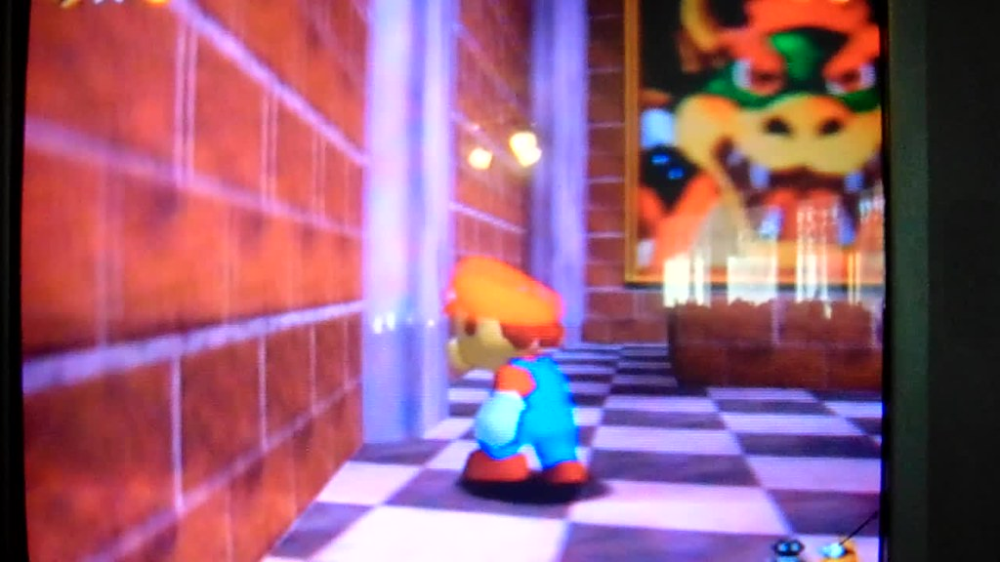

Información
- Título: Super Mario 64
- Lanzamiento: 23 de junio de 1996
- Jugadores: 1 jugador
- Desarrolador: Nintendo EAD
- Distribuidor: Nintendo
- Género: Plataformas
- Clasificación: PEGI +3
Reseña
Nacido de la mente de Shigeru Miyamoto, en el año 1996, llegaba, junto al estreno de la nueva consola de la marca Nintendo, el videojuego Super Mario 64.
Un juego de plataformas que sin ser el primer plataformas en 3D de la historia, sí supuso de ahí en adelante el ejemplo en el que se mirarían todos los que vendrían después.
El juego consta de 15 niveles conectados entre sí mediante un castillo que hace las veces de nivel central desde el que acceder al resto.
El objetivo consiste en coleccionar 150 estrellas distribuidas entre los niveles del juego.
Acompañado de una gran jugabilidad y un gran sonido, repleto de divertidas melodías, recomendamos encarecidamente jugar a esta aventura tan divertida hoy como lo era en el 96.
NOTA: 10/10
Imágenes
